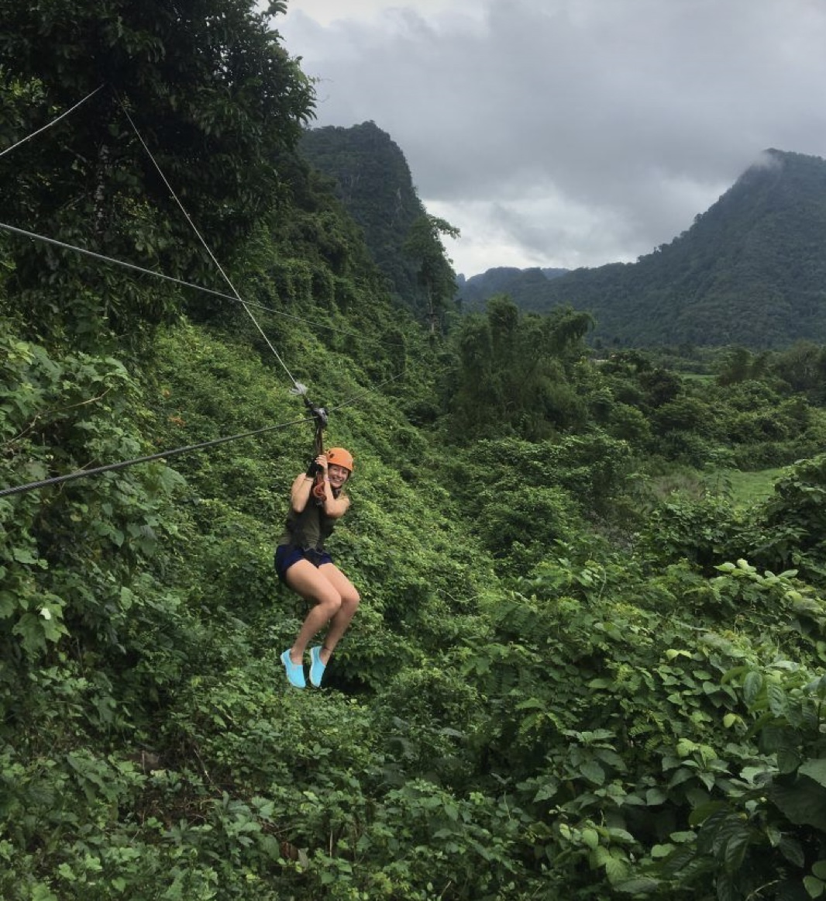

| CampingExperience the magic of Gladstone National Park under the stars with our camping facilities. Nestled amidst the pristine wilderness, our campgrounds offer the perfect retreat for nature enthusiasts and adventurers alike. Whether you prefer pitching a tent or parking your RV, our designated camping sites provide a serene setting for your outdoor getaway. Fall asleep to the soothing sounds of the forest and wake up to the chorus of birdsong as you immerse yourself in the beauty of the imaginary landscapes. With amenities such as fire pits, picnic areas, and restroom facilities, your camping experience at Gladstone National Park promises comfort and convenience amidst nature's splendor. |
CYCLINGExplore the scenic beauty of Gladstone National Park on two wheels. Our well-maintained cycling trails offer a perfect blend of adventure and nature appreciation. Whether you're a beginner or an experienced cyclist, there's a route for everyone to enjoy the park's diverse landscapes. | |
.jpg) |
PHOTOGRAPHYCapture the essence of Gladstone's breathtaking landscapes through your lens. From panoramic vistas to hidden wildlife, our national park provides a wealth of photographic opportunities. Don't forget your camera – you never know what awe-inspiring moment you might encounter. |
HIKINGImmerse yourself in the wonders of Gladstone by embarking on our hiking trails. Whether you prefer leisurely strolls or challenging hikes, our diverse network of paths allows you to discover the park's natural beauty, including lush forests, cascading waterfalls, and panoramic viewpoints. |  |
BIRDWATCHINGGladstone National Park is a haven for bird enthusiasts. Grab your binoculars and explore the rich avian diversity that calls the park home. With a variety of habitats, you may spot rare and migratory birds as you meander through the designated birdwatching zones. | |
RANGER PROGRAMSEnhance your park experience with our ranger-led programs. Our knowledgeable and passionate park rangers provide insights into the park's ecology, wildlife, and conservation efforts. Join a guided tour or participate in educational activities to deepen your connection with Gladstone's natural wonders. | |
RAFTING AND KAYAKINGFor water enthusiasts, Gladstone National Park offers exciting opportunities for rafting and kayaking. Navigate the park's rivers and waterways, experiencing the thrill of adventure while surrounded by pristine landscapes. Whether you're a novice or an experienced paddler, our water activities cater to all skill levels. | |
ZIPLININGSoar above the treetops and experience Gladstone National Park from a thrilling perspective with our ziplining adventure. Feel the adrenaline rush as you zip through the lush canopy, taking in panoramic views of the imaginary landscapes below. Our state-of-the-art zipline course is designed for both beginners and thrill-seekers, offering a safe and exhilarating journey through the heart of the park. Embrace the sense of freedom as you glide from platform to platform, surrounded by the sights and sounds of nature. Whether you're an adventure enthusiast or looking for a unique way to connect with the great outdoors, ziplining at Gladstone National Park promises an unforgettable and immersive experience. |  |